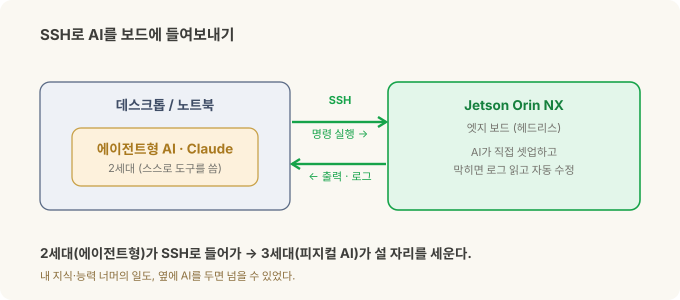
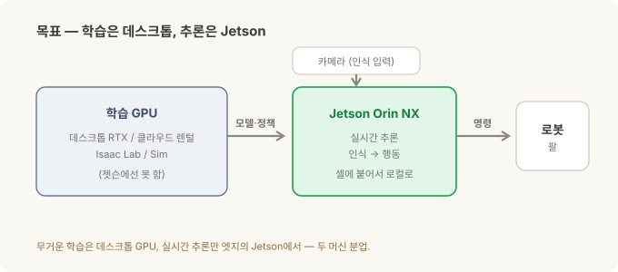
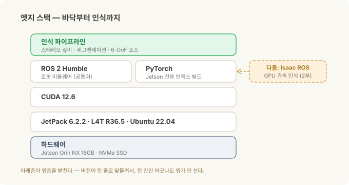

로봇의 뇌를 엣지에 올리기 (1) — JetPack부터 ROS 2까지, 내가 부딪힌 벽들¶
현장 노트 · '로봇의 뇌를 엣지에' 2부작 중 1부. 이번 편은 아무것도 안 깔린 Jetson 보드에서 ROS 2가 도는 상태까지 실제로 걸어간 길입니다. 2부는 그 위에 Isaac ROS를 올려 GPU 가속 인식을 붙입니다.
먼저 이 글이 어떻게 쓰였는지부터 짚을게요. 여기 나오는 셋업의 상당 부분을, 저는 직접 키보드로 치지 않았습니다. 시작할 때 Jetson에 SSH를 열어 에이전트형 AI(2세대·Claude)가 보드에 직접 들어오게 해뒀고, 그 뒤로는 AI가 제 손보다 빠르게 명령을 치고 로그를 읽고 막힌 데를 풀었어요. 제 지식과 능력 너머의 일을 2세대 AI로 밟고 넘어, 3세대 피지컬 AI에 올라탄 셈입니다. 그 시작(어떻게 붙였나)은 잠시 뒤에 자세히 — 먼저 무엇을·왜 만드는지부터.
로봇 비전 시리즈에서 로봇이 어떻게 보는지를 다뤘습니다. 스테레오로 깊이를 재고, 마스크로 물체를 오려내고, 6-DoF 포즈를 잡는 그 파이프라인. 그런데 그 전부가 어딘가에서는 진짜로 돌아야 합니다 — 클라우드가 아니라, 셀에 볼트로 붙은 손바닥만 한 컴퓨터 위에서요.
이 글은 그 "어딘가"를 세우는 이야기입니다. Jetson Orin NX라는 작은 엣지 컴퓨터에, 로봇의 뇌가 될 스택을 바닥부터 올린 기록. 그리고 정직한 버전 — 박스를 뜯고 나서 ROS 2가 돌기까지, 저를 문 벽들.
Physical AI는 결국 "AI가 로봇 속으로 들어가는" 흐름이에요. 그 AI가 실제로 착륙하는 곳이 바로 이 엣지 컴퓨터입니다. 그러니 이건 화려한 이야기는 아니고, 바닥에서 삽질한 이야기예요. 저처럼 삽질할 누군가에게, 지도가 되었으면 합니다.
30초 요약¶
- 엣지 AI = 클라우드 없이, 셀 옆 작은 컴퓨터에서 인식→행동을 돌리는 것. 그 컴퓨터가 Jetson(NVIDIA의 엣지 GPU 보드)이에요.
- 하드웨어: Jetson Orin NX 16GB + NVMe SSD(사실상 필수). 인식 모델과 도커 이미지가 커서 SD카드엔 안 들어갑니다.
- JetPack(=Jetson 전용 OS+드라이버+CUDA 묶음) 6으로 플래시 → Ubuntu 22.04·CUDA 12.6. (일부러 최신 7이 아니라 6 — 더 안정적이고 생태계 지원이 두껍습니다.) 여기서 첫 벽들이 나옵니다.
- ROS 2 Humble을 apt로 설치 — 로봇 소프트웨어의 공통어. 여기까진 비교적 순탄.
- 제일 큰 벽:
pip install torch가 엉뚱한 CUDA 버전을 끌어와 안 돌아가요 → Jetson 전용 인덱스로 받아야 해결됩니다. 데스크톱 상식이 배신하는 지점. - 큰 그림: 무거운 학습은 데스크톱·클라우드 GPU에서, 추론은 Jetson에서. ROS 2는 다음 단계인 Isaac ROS로 가는 길목이고, 그건 2부에서.
- 어떻게 빨랐나: 시작할 때 Jetson에 SSH를 열어 에이전트형 AI(2세대·Claude)가 보드에 직접 접근하게 해두고 출발했어요. 제 지식 너머의 일을 2세대 AI로 밟고 넘어 3세대 피지컬 AI에 올라탄 셈입니다.
- 이건 특정 현장 배치가 아니라, 일반적인 Jetson 셋업 경험입니다.
먼저 — SSH로 AI를 들여보내기¶
엣지 개발이 데스크톱과 다른 첫 지점이 여기예요. Jetson은 대개 헤드리스(모니터 없이)로 다룹니다. 그래서 시작 순서는 이렇습니다.
- 첫 부팅만 모니터·키보드를 붙여 초기 설정(계정·네트워크)을 마칩니다.
- 유선 기가비트 이더넷으로 망에 물립니다. (제 산업용 캐리어 보드엔 WiFi 모듈이 없어서, 유선이 제일 확실했어요.)
- Jetson의 IP를 확인하고(고정 IP 권장), 데스크톱에서 SSH 키 기반 로그인을 걸어 비밀번호 없이 들어가게 합니다(
ssh-keygen→ 공개키를 보드로 복사). - 그다음 그 SSH 접속을 에이전트형 AI(Claude)에게 넘깁니다. 이제 AI가 보드에서 직접 명령을 치고, 출력과 로그를 읽고, 막히면 스스로 고쳐요. (원격에서 붙어야 하면 Tailscale 같은 걸로 어디서든 같은 주소가 되게 해두면 편합니다.)
이 한 번의 셋업이 나머지 전부의 속도를 바꿨습니다. 앞으로 나올 벽들 — CUDA 불일치, 커널 붕괴, PATH 문제 — 도 상당수는 제가 아니라, 옆에 앉은 AI가 로그를 읽어가며 풀었어요.

여기에 재미있는 포개짐이 있죠. 로봇 비전 시리즈의 세대 이야기 — 1세대 생성형(글·그림), 2세대 에이전트형(스스로 판단하고 도구를 쓰는), 3세대 피지컬(로봇 속으로 들어간 AI). 저는 2세대 에이전트형 AI를 써서, 3세대 피지컬 AI가 착륙할 엣지 박스를 세운 겁니다. 2세대가 3세대의 활주로를 깔아준 셈이에요. 그러니 이건 '전문가만의 영역'이라는 이야기가 아닙니다 — 제 지식 너머도, AI를 옆에 두면 넘을 수 있었어요.
왜 엣지인가, 왜 Jetson인가¶
로봇이 부품을 보고 집는 루프 — 보고, 판단하고, 움직이고, 힘을 느끼고 보정하고 — 는 밀리초 단위로 돌아야 합니다. 이걸 클라우드로 왕복시키면? 지연이 치명적이고, 인터넷이 끊기면 로봇이 멈추고, 공장 보안상 외부 연결 자체가 금지인 경우도 많아요. 그래서 인식과 판단은 셀에 붙은 컴퓨터에서 로컬로 돌아야 합니다.
문제는 그 "작은 컴퓨터"가 GPU를 품어야 한다는 거예요. 딥러닝 인식 모델은 GPU 없이는 느려서 못 씁니다. 그런데 셀에 데스크톱 그래픽카드를 우겨넣을 순 없죠.
Jetson이 그 답입니다. NVIDIA가 만든, 손바닥만 한데 GPU가 달린 엣지 컴퓨터예요. 그중 Orin NX는 저전력·소형이면서 인식 파이프라인을 돌릴 만한 GPU를 갖췄습니다. 두 가지는 처음부터 정해두는 게 좋아요.
- 왜 16GB인가 — 스테레오·세그멘테이션·포즈 추정 모델이 메모리를 꽤 먹습니다. 8GB짜리도 있지만 여러 모델을 동시에 돌리면 빡빡해요. 16GB가 안전한 선택입니다.
- 왜 NVMe SSD인가 — 이게 초심자가 제일 자주 놓치는 부분입니다. 인식 프레임워크·도커 이미지·모델 파일은 금방 수십 GB가 돼요. 기본 저장소(eMMC나 SD카드)엔 애초에 안 들어갑니다. NVMe SSD에서 부팅하는 게 사실상 전제조건이에요. (저는 128GB NVMe를 썼는데, 공장 이미지가 절반쯤을 미할당으로 남겨둬서
parted로 풀디스크까지 넓혀야 했습니다.)
JetPack 6 플래시 — OS부터 갈아엎기¶
먼저 용어. JetPack은 그냥 우분투가 아니라, Jetson용 OS + GPU 드라이버 + CUDA + 가속 라이브러리를 한 묶음으로 조립한 겁니다. L4T(Linux for Tegra)라는 커널 위에 얹혀 있고요. 즉 버전이 전부 맞물려 있어서, 아무거나 건드리면 와르르 무너집니다.
보드는 원래 구형 JetPack(5.x)으로 왔어요. 그래서 더 최신 CUDA·Ubuntu·ROS 2를 쓰려고 JetPack 6.2.2(L4T R36.5, Ubuntu 22.04, CUDA 12.6, Python 3.10)로 재플래시했습니다. 플래시는 우분투 호스트 PC에서 SDK Manager로, 보드를 리커버리 모드에 넣고 NVMe에 굽는 방식이에요.
다만 여기서 한 가지는 의도적인 선택이었습니다 — 가장 최신인 JetPack 7이 아니라 6에 멈춘 것. 엣지에서는 '가장 새것'이 답이 아니거든요. JetPack 6은 이미 안정화가 충분히 됐고, 드라이버·미리 빌드된 ML 패키지(뒤에 나올 Jetson용 PyTorch)·Isaac ROS·쌓인 커뮤니티 답변까지 생태계 지원이 두껍습니다. 최신 7은 앞서가는 만큼 아직 지원이 얇고요. '새것'보다 '검증되고 받쳐주는 것'을 택한 겁니다 — 현장에 들어갈 물건일수록 이 판단이 중요해요.
여기서 저를 문 벽들 — 전부 실제로 걸린 것들이에요:
sudo apt upgrade를 하지 마세요. 습관적으로 쳤다간 커널이 깨집니다.nvidia-l4t-*패키지들을 먼저apt-mark hold로 묶어두지 않으면, 단일 NVMe 레이아웃에서 A/B 파티션 후처리가 실패하면서Rootfs AB is not enabled에러로 부팅이 망가져요. JetPack에서 업데이트 습관은 버리세요.nvcc가 PATH에 없습니다. CUDA는 깔려 있는데 컴파일러가 안 잡혀요./usr/local/cuda/bin을 PATH에, 라이브러리 경로를LD_LIBRARY_PATH에 직접 추가해야 합니다(.bashrc).pip3·nano·curl조차 없습니다. 미니멀 이미지라 기본 도구부터 직접 깔아야 해요.- 네트워크 인터페이스 이름이 바뀝니다. JetPack 6에서
eth0같은 이름이enP8p1s0식으로 바뀌어서, 예전 스크립트나 고정 IP 설정이 조용히 다 깨집니다.
교훈 하나. JetPack은 "우분투 + 약간"이 아니라 "손대면 깨지기 쉬운, 버전이 꽉 맞물린 우분투"입니다. 데스크톱 리눅스 습관을 그대로 들고 오면 반드시 한 번은 됩니다.
ROS 2 Humble — 로봇 소프트웨어의 공통어¶
ROS 2(Robot Operating System 2)는 이름과 달리 OS가 아니라, 로봇 소프트웨어를 위한 미들웨어예요. 카메라·인식·모션 같은 조각들을 '노드'로 만들고, 노드들이 '토픽'으로 서로 메시지를 주고받게 해줍니다. 사실상 로봇 업계의 공통어라, 남이 만든 부품을 가져다 붙이기 쉬워지죠.
Humble은 그 LTS(장기 지원) 배포판입니다. 설치 자체는 비교적 순탄했어요 — packages.ros.org에서 apt로 ros-humble-ros-base를 깔고, 빌드 도구인 colcon도 apt로, .bashrc에서 source 걸어주면 끝.
정작 진짜 벽은 ROS 2가 아니라, 그 옆에 나란히 서는 GPU 스택에서 왔습니다.
진짜 벽 — PyTorch가 안 돌던 밤¶
인식 모델을 돌리려면 PyTorch(딥러닝 프레임워크)를 GPU로 띄워야 합니다. 그래서 아무 생각 없이 pip install torch를 쳤죠. 그게 며칠을 잡아먹은 실수였어요.
일반 pip은 최신 CUDA(예: CUDA 13)용으로 빌드된 PyTorch를 끌어옵니다. 그런데 제 Jetson의 드라이버는 CUDA 12.6이에요. 버전이 어긋나니 GPU를 못 잡고, 온갖 알 수 없는 에러가 납니다. 데스크톱이라면 그냥 됐을 일이, 여기선 안 돼요.
해결책은 Jetson 전용 인덱스에서 받는 것이었습니다. NVIDIA의 Jetson용 파이썬 패키지 인덱스(Jetson AI Lab, JetPack 6·CUDA 12.6에 맞춘 빌드)에서 PyTorch를 가져와야 GPU가 제대로 잡혀요. 일반 PyPI가 아니라요.
이게 엣지의 본질입니다. CPU 아키텍처(ARM)·CUDA 버전·JetPack·프레임워크 빌드가 전부 한 줄로 맞물려 있어서, 데스크톱에서 당연하던 한 줄 명령이 여기선 하나도 당연하지 않아요. "왜 안 되지"의 답이 열에 아홉은 버전 불일치입니다.
큰 그림 — 이게 어디로 가나¶
여기까지가 "여기까지 온" 지점입니다. 그런데 이 셋업이 향하는 목적지를 알아야 왜 이걸 다 했는지가 보여요.

목표는 두 머신 분업입니다.
- 학습은 데스크톱(또는 클라우드) GPU에서. 시뮬레이션과 모델 학습처럼 무거운 일은 RTX급 데스크톱 GPU — 없으면 클라우드 GPU 렌털 — 이 맡아요. (어느 쪽이든 젯슨에선 못 합니다 — 뒤에 나올 함정이기도 하고요.)
- 추론은 Jetson에서. 학습으로 나온 모델·정책을 Jetson으로 내려서, 셀에서 실시간 인식→행동만 돌립니다.
그리고 솔직한 고백. 지금 실제로 도는 제어 루프는 순수 파이썬이에요 — 카메라에서 프레임을 받아, 모델을 돌리고, 로봇에 명령을 보내는. ROS 2는 아직 "있으면 좋은 선택적 인프라"에 가깝습니다. 그럼 왜 굳이 ROS 2를 깔았을까요?
다음 단계인 Isaac ROS로 가는 길목이기 때문입니다.

다음 편 — Isaac ROS¶
ROS 2까지 왔으니 다음은 Isaac ROS입니다. NVIDIA가 만든, GPU로 가속되는 ROS 2 인식 패키지 모음이에요. 로봇 비전 시리즈에서 본 그 파이프라인 — 스테레오 깊이, 세그멘테이션, 6-DoF 포즈 — 을 젯슨 위에서 zero-copy로 빠르게 돌리는 실장판입니다.
미리 짚어둘 갈림길이 하나 있어요. 최근 Isaac ROS는 두 갈래로 나뉩니다 — 옛 JetPack 6/ROS 2 Humble 계열과, 최신 JetPack 7/ROS 2 Jazzy 계열. 제가 선 JetPack 6.2.2에선, 앞서 '안정·지원'을 이유로 6을 택한 그 논리 그대로 Humble 쪽이 자연스러운 선택이죠. 2부에서 이 위에 인식 스택을 올립니다.
정리¶
| 단계 | 핵심 | 나를 문 벽 |
|---|---|---|
| 하드웨어 | Orin NX 16GB + NVMe SSD | SD카드론 부족 — NVMe 필수, 디스크 확장 |
| JetPack 6 | OS+드라이버+CUDA 묶음, SDK Manager로 플래시 | apt upgrade 커널 붕괴 · nvcc PATH · 기본 도구·NIC 이름 |
| ROS 2 Humble | 로봇 미들웨어, apt로 설치 | (순탄) |
| PyTorch/GPU | 인식 모델 구동 | pip torch가 CUDA 불일치 → Jetson 전용 인덱스 |
| 큰 그림 | 학습=데스크톱, 추론=Jetson | 지금 실루프는 순수 파이썬, ROS 2는 Isaac ROS로 가는 길 |
| 다음(2부) | Isaac ROS | 두 트랙(Humble vs Jazzy) 갈림길 |
기억할 한 가지: 엣지 셋업의 어려움은 리눅스가 어려워서가 아니라, 아키텍처·CUDA·JetPack·프레임워크 버전이 전부 한 줄로 맞물려 있어서입니다. 데스크톱 상식이 배신하는 그 지점들을 미리 알면, 삽질이 반나절로 줄어요.
관련: 스테레오 비전에서 목표물 잡기까지 · 좌표계와 변환 · Physical AI에 투자한다면 — 코봇 투자편
출처와 표기¶
버전·절차는 NVIDIA의 JetPack·Jetson 문서와 ROS 2(Humble) 공개 문서를 근거로 했고, JetPack·CUDA·ROS 2·PyTorch 버전은 시점과 모듈에 따라 달라지는 값이라 제 셋업 기준의 근사치입니다. 실제 설치 전 각자 모듈의 최신 문서를 확인하세요. 본 글은 특정 현장 배치가 아니라 일반적인 Jetson 개발 셋업 경험이며, Jetson·JetPack·Isaac ROS·CUDA는 NVIDIA의, ROS는 Open Robotics의 상표로 지칭 목적으로만 사용했습니다.
용어 설명¶
- Jetson — NVIDIA의 엣지용 소형 GPU 컴퓨터. Orin NX는 그 중형급 모듈
- JetPack — Jetson 전용 OS+드라이버+CUDA+가속 라이브러리 묶음
- L4T (Linux for Tegra) — JetPack이 얹히는 Jetson용 리눅스 커널·BSP
- CUDA — NVIDIA GPU로 계산을 돌리는 플랫폼. 버전이 프레임워크와 맞아야 함
- ROS 2 · Humble — 로봇 소프트웨어 미들웨어와 그 LTS 배포판
- colcon — ROS 2 워크스페이스 빌드 도구
- NVMe SSD — 고속 저장장치. Jetson에서 인식 스택을 돌리려면 사실상 필수
- 엣지 AI — 클라우드가 아니라 현장 기기에서 직접 AI를 돌리는 것
- Isaac ROS — NVIDIA의 GPU 가속 ROS 2 인식 패키지 모음(2부 주제)